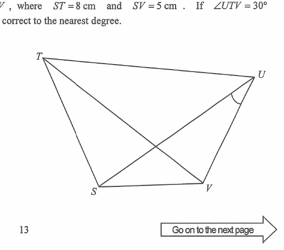

Quadrilateral & Trigonometry — interactive diagram & step-by-step solution
The figure shows the quadrilateral \(STUV\), where \(ST=8\) cm and \(SV=5\) cm. If \(\angle UTV=30^\circ\) and \(\angle TSU=\angle TVU=90^\circ\), find \(\angle SUV\) correct to the nearest degree.

Put \(S=(0,0)\). Since \(ST=8\) and \(\angle TSU=90^\circ\), take \(T=(0,8)\) and \(U=(u,0)\) on the positive \(x\)-axis.
Then \(ST=8\) is the vertical leg and \(SU=u\) is the horizontal leg, so in right \(\triangle TSU\): \(TU^2=8^2+u^2\).
\(\angle TVU=90^\circ\) means \(V\) lies on the circle with diameter \(TU\) (Thales' theorem).
In \(\triangle TUV\), \(\angle UTV=30^\circ\), so \(V\) sits at the \(30^\circ\) position measured from \(T\) along this circle.
Both right angles stand on \(TU\), so \(S\) and \(V\) lie on that same circle. The angles \(\angle USV\) and \(\angle UTV\) stand on the same chord \(UV\) from the same side, so
\[ \angle USV=\angle UTV=30^\circ. \]
In right \(\triangle TUV\), \(\sin 30^\circ=\dfrac{UV}{TU}\), hence \(UV=\tfrac12TU\).
Now apply the cosine formula in \(\triangle SUV\) about the angle at \(S\), writing \(SU=u\), \(SV=5\) and \(UV=\tfrac12\sqrt{64+u^2}\):
\[ UV^2=SU^2+SV^2-2(SU)(SV)\cos 30^\circ \]
\[ \tfrac14\left(64+u^2\right)=u^2+25-5\sqrt3\,u \;\Longrightarrow\; 3u^2-20\sqrt3\,u+36=0 \]
\[ u=\frac{20\sqrt3\pm\sqrt{1200-432}}{6}=\frac{20\sqrt3\pm16\sqrt3}{6}=6\sqrt3\ \text{ or }\ \frac{2\sqrt3}{3} \]
The smaller root puts \(V\) on the same side of \(SU\) as \(T\) and makes \(\angle SUV\approx 142^\circ\); in the figure \(V\) and \(T\) are on opposite sides of \(SU\), so the root that matches is \(SU=6\sqrt3\) cm.
With \(SU=6\sqrt3\) and \(\angle USV=30^\circ\) on the far side of \(SU\) from \(T\), the point \(V\) is \(5\) cm from \(S\), so \(SV\) makes \(30^\circ\) below the \(x\)-axis and \(V=\left(\tfrac{5\sqrt3}{2},\,-\tfrac52\right)\), while \(U=(6\sqrt3,0)\) and \(S=(0,0)\).
Distance formula on each side:
\[ SU=6\sqrt3,\qquad SV=\sqrt{\left(\tfrac{5\sqrt3}{2}\right)^{2}+\left(\tfrac52\right)^{2}}=\sqrt{\tfrac{75}{4}+\tfrac{25}{4}}=5 \]
\[ UV=\sqrt{\left(6\sqrt3-\tfrac{5\sqrt3}{2}\right)^{2}+\left(0+\tfrac52\right)^{2}}=\sqrt{\tfrac{147}{4}+\tfrac{25}{4}}=\sqrt{43} \]
Check against the right triangle: \(UV=\tfrac12TU=\tfrac12\sqrt{64+108}=\tfrac12\sqrt{172}=\sqrt{43}\) ✓
In \(\triangle SUV\) the side opposite \(\angle SUV\) is \(SV=5\), so the cosine formula gives
\[ \cos\angle SUV=\frac{SU^{2}+UV^{2}-SV^{2}}{2(SU)(UV)}=\frac{108+43-25}{2\left(6\sqrt3\right)\left(\sqrt{43}\right)}=\frac{126}{12\sqrt{129}}=\frac{21}{2\sqrt{129}} \]
\[ \cos\angle SUV\approx 0.9245\ \Longrightarrow\ \angle SUV\approx 22.4^\circ\approx 22^\circ\ \text{(nearest degree)} \]
Question. In the figure, \(S=(0,0)\), \(T=(0,8)\) and \(U=(6,0)\), so that \(\angle TSU=90^{\circ}\). \(V\) is the foot of the perpendicular from \(S\) to \(TU\). (a) Find \(TU\). (b) Find \(SV\). (c) Find the coordinates of \(V\). (4 marks)